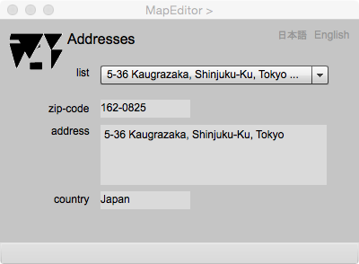

Address Viewer
Introduction
This information page is an address viewer. It displays address of a feature. If a feature has more than one addresses, the user can select address from the drop down list.
Address viewer

Figure 1. Information page for the display of adresses
FIELDS
attributes (selectable)
A list of address attributes included in the feature. User shall select one attribute name to see the list of attribute values.
attribute list (selectable)
The list of addresses in the selected address attribute. If there are more than one address in a feature, the address will be displayed by the selection of a row in the drop down list.
zip-code
a postal code. The coding system is different depending on countries.
country
The name of a nation with its own government and territory.
日本語
今あなたが読んでいるドキュメントが表示されます．
English
You can read the tutorial written in English.